Exercise 3 — Organizations & the API Definition
Create the Organizations that govern who can access what, then import the public Petstore OpenAPI specification to create your first API Definition and wire up Traffic Routing — the heart of Cloud API Management.
What you'll cover
- Configuring Organizations
- Creating the API Definition
- Configuring EndPoint Domains and Traffic Routing
Configuring Organizations
It’s a best practice for any company to complete initial configurations before using the system. This activity will cover how to set up and configure the Cloud API Management Organizations. Let’s begin with the company’s organizational structure. You don’t need to create organizations that will not have access to develop or use APIs.
-
1
From Control Center select the Organizations tile or from the top menus select Manage > Organizations.
-
2
Select Create your first Organization. The New Organization dialog appears.
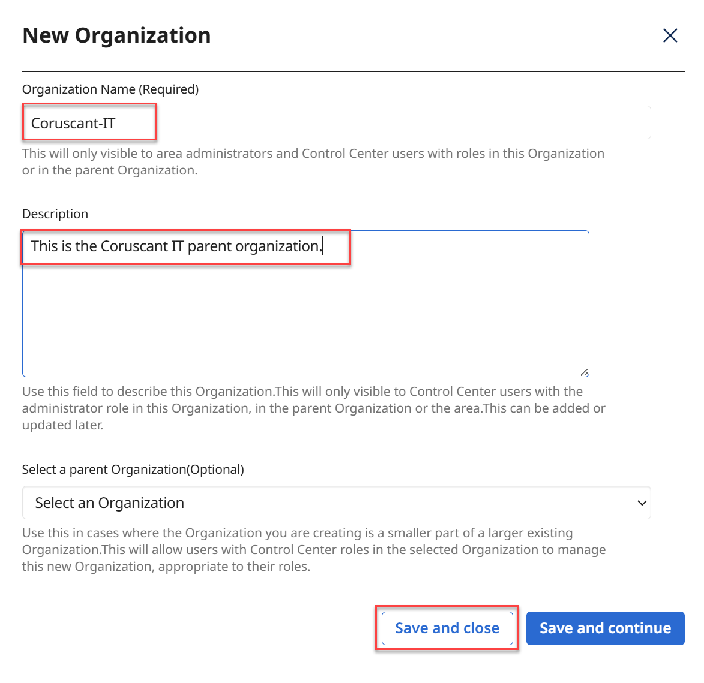
Create the following Organizations. Select Save and Close for each one. Select New Organization to create the next one.
Organization Name Description Select a Parent Organization Corporate-IT This is the Corporate IT parent organization. N/A Corporate-FIN This is the Corporate Finance parent organization. N/A Corporate-HR This is the Corporate Human Resources parent organization. N/A -
3
When done, your Organizations page should look like the following.
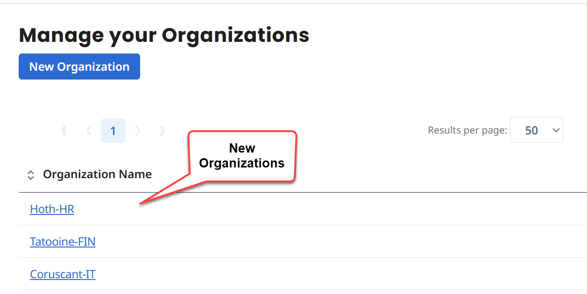
If no Organizations are defined, you will have configurations that will use the Area Level. The Area Level means the entire tenant will be available to all objects or elements. It is important that you create organizations and sub-organizations to control who has access to what. Otherwise, all users will have access to all APIs.
Note: as you noticed, during the Navigation activity, there are other parts that can be configured. To facilitate and to reduce complexity, these are the only configurations you will perform.
Creating the API Definition
For your first Cloud API Management API Definition in this lab, you will need to have an OpenAPI Specification of the source or backend API.
The OpenAPI Specification used for this activity was derived from the https://petstore.swagger.io/ site. This is a free Petstore API where you can send requests to interact with pets, stores, and users. This API is not hosted by Boomi.
-
1
Go to the Cloud API Management browser tab. From Control Center select API Definitions.
If this is your first API Definition, the screen will show four options:
Create your first API Definition
Create your first API Definition by importing a file
Create your first API Definition by importing from URI
Create your first API Definition by import from Boomi Platform
-
2
Select Create your first API Definition by importing from URI.
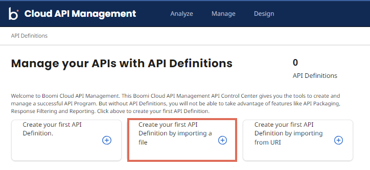
The Import an API Definition popup appears. Paste the following URL into the associate field: https://petstore.swagger.io/v2/swagger.json. For Public EndPoint Domain select your Cloud API Management Tenant Public Domain ending in api.mashery.com. Finally, for Organization select Corporate-IT. When done, select Preview.
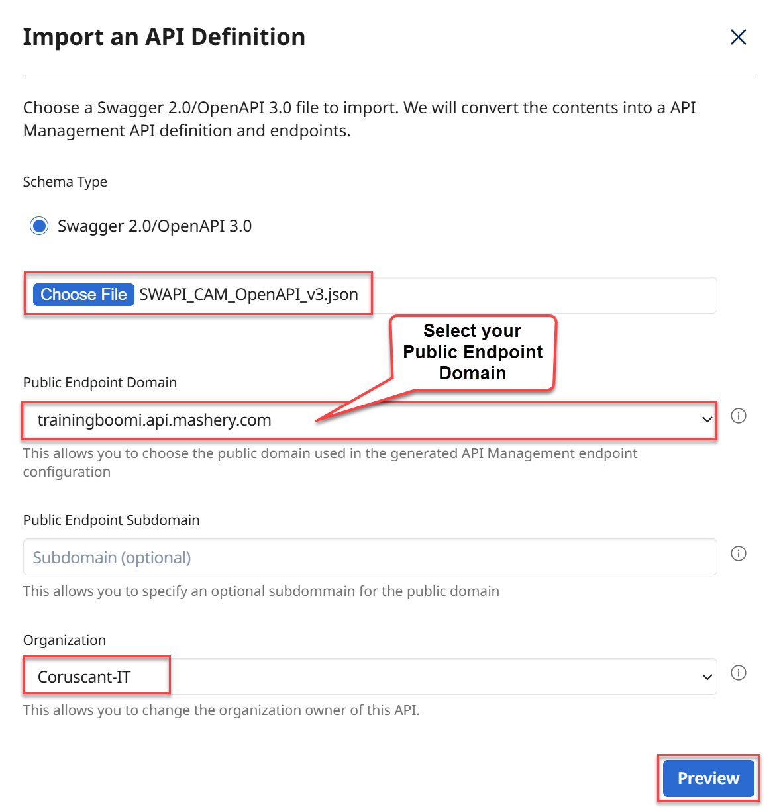
The Preview screen appears. This is a preview of the API Definition and EndPoints that will be created from the uploaded file. Select Save and continue.
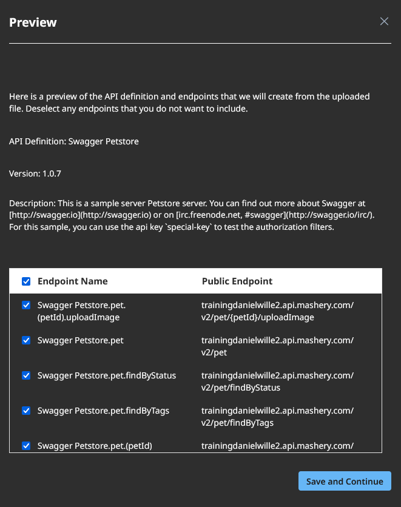
The message “Success! Your API Management API and Interactive Documentation has been created.” appears. From the bottom, select View your API.
The system refreshes and takes you to the Endpoints: Swagger Petstore screen. You can see details like the name, Public Domain, and an Icon to view the Client Usage Report. From the left, select Interactive Documentation Access Control. Select the following Unselected values:
Administrator
Corporate-IT Administrator
Everyone
The selected values will show up under the Current box. After selecting these two values select Save.
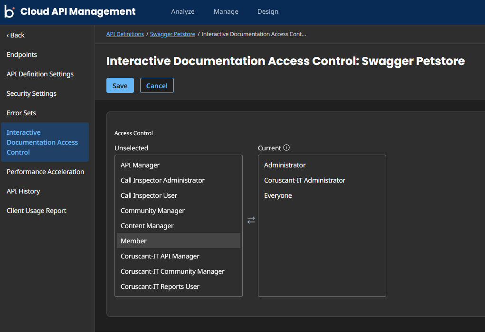
This means, only those Roles will have access to this API via the Interactive Documentation.
Configuring EndPoint Domains and Traffic Routing
-
1
Go to the Endpoints page. Select the Swagger Petstore.pet.findByStatus EndPoint link.
-
2
From the left side, select Domains & Traffic Routing. This is the heart of Cloud API Management. This is also called Traffic Manager. So, what are you doing now? You are creating the Traffic connection between the Source or Backend System’s API and the Cloud API Management’s API. It can be interpreted as a link between the two APIs.
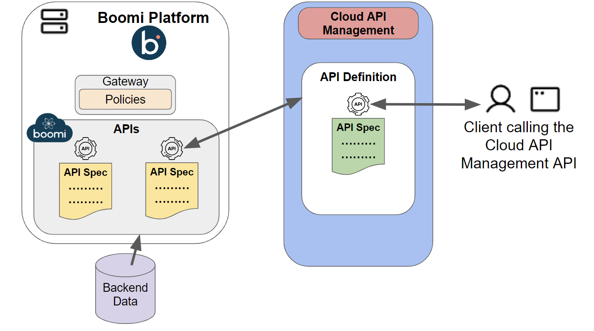
The screen shows the connection or link between these two APIs locations. For Customize your Public Endpoint Address, and for Protocol, select https.
-
3
When done, select Save.
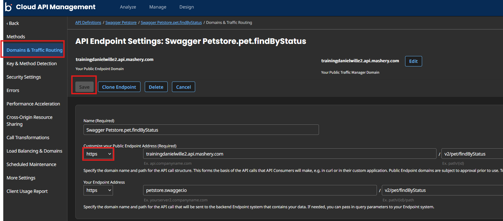
When a client calls your-public-domain.api.mashery.com/v2/pet/findByStatus, Cloud API Management routes the traffic to petstore.swagger.io/v2/pet/findByStatus. This is the objective of the Traffic Manager. You can modify your public domain path if needed, but for now you will leave these with these default values.
Let’s perform other configurations. From the left side, select Key & Method Detection. This is where you will configure some of the properties of the Cloud API Management API.
-
4
Scroll down and enter the following:
Request Authentication Type = API Key Developer's API Key Location = only select Header Key Field Identifier = api_key (in lowercase) -
5
When done, select Save.
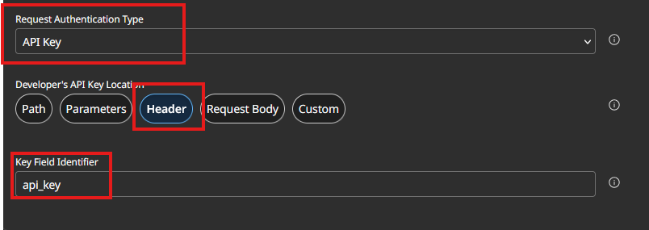
-
6
From the left side select Cross-Origin Resource Sharing. Select Enable CORS and Allow CORS Requests from any domain. Select Save.
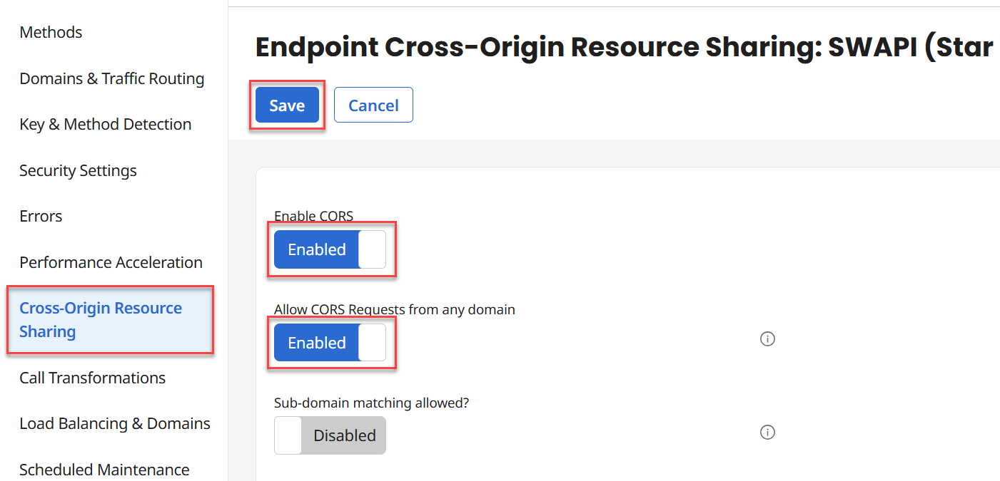
-
7
From the left side select More Settings. For Time to wait for a response from endpoint enter 30. Select Save.
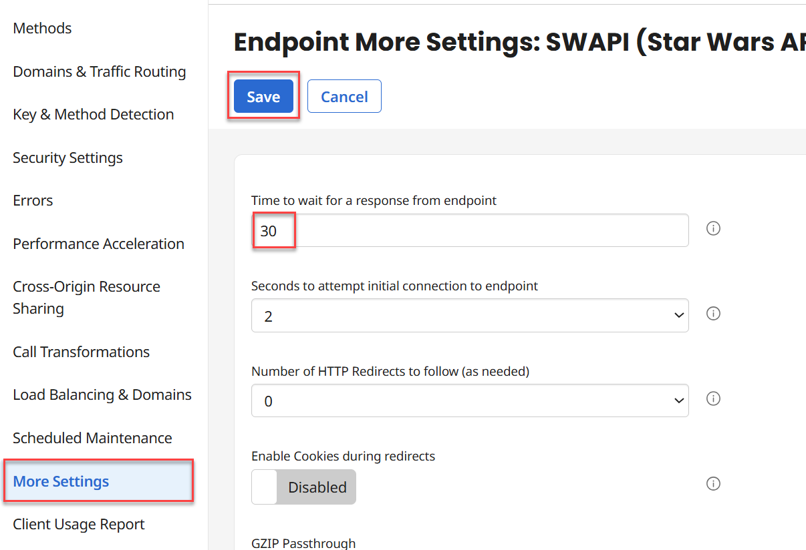